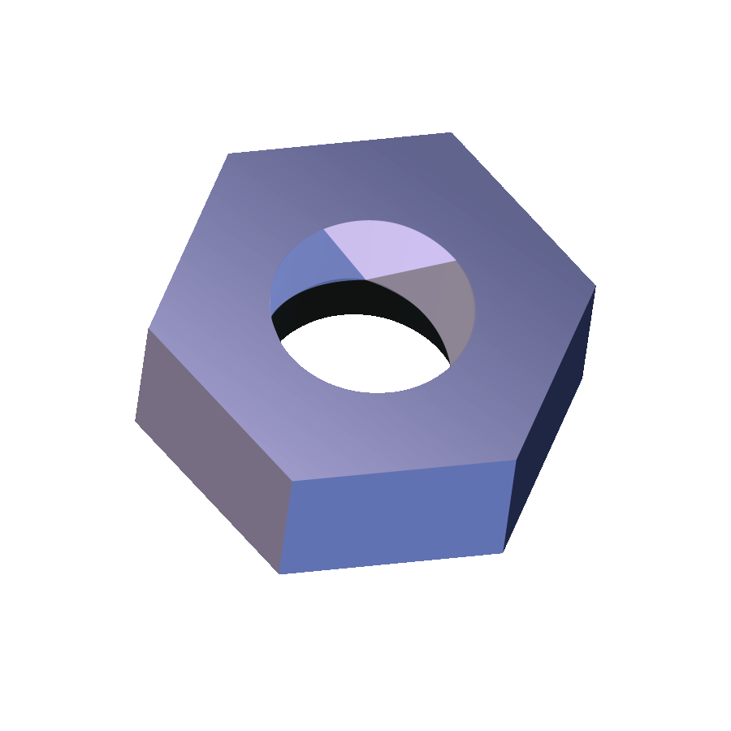

Buildbot
The Continuous Integration Framework
Your Name Here
Your Affiliation Here

Go!
Here's where you talk about Buildbot. Note the fancy header at the top.
Using this framework will help to unite Buildbot presentations.
You can use any features of reveal.js you'd like.